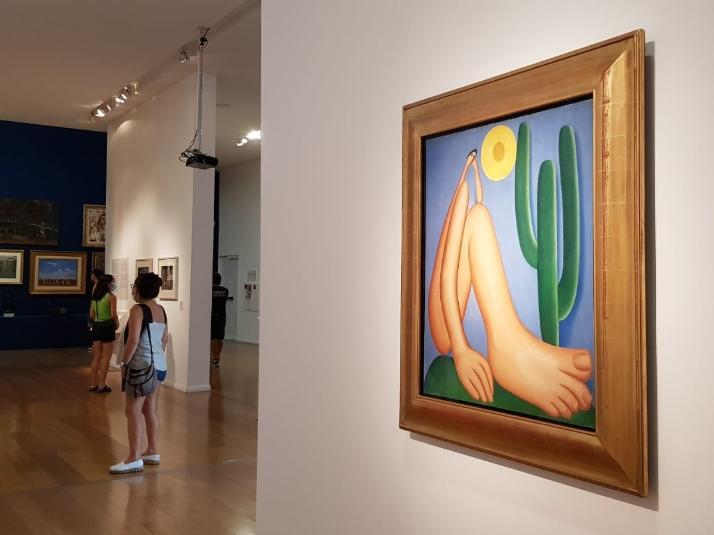

O Obelisco de Buenos Aires, inaugurado em 23 de maio de 1936, foi construído para comemorar o 400º aniversário da primeira fundação da cidade. Projetado pelo arquiteto argentino Alberto Prebisch, o monumento de 67,5 metros de altura foi concluído em apenas 31 dias, tornando-se um marco da arquitetura moderna e símbolo da capital argentina. O interior é oco, com uma escada marinheira que leva ao topo, e embora não seja aberto ao público geral, o local é o principal ponto de encontro para celebrações esportivas, culturais e manifestações políticas.
A obra foi pintada em 1928 por Tarsila do Amaral. Em 1995, foi vendida em um leilão internacional, quem comprou foi um colecionador argentino (Eduardo Costantini). Atualmente o quadro está na Argentina, ele faz parte do acervo do Museu de Arte Latino-Americana de Buenos Aires (MALBA). O quadro às vezes vem para o Brasil em exposições temporárias. É considerado a obra mais importante do modernismo brasileiro.
